Introduction
This section of the blog talks about what I learnt about PCB Design. Before we start on the design, we have to use a software to design the PCB, I chose to use Autodesk Eagle, which is a software used to design the PCB. The table below will show the entire design process I took to create the PCB. The list of materials will be at the bottom of the page.
Electronics Design
At this point after learning about Electronic production, we have to do the electronic design for the PCB. I will be designing a 'hello World Board' using an ATtiny412.
| Compoents | Quantity |
|---|---|
| ATtiny412 | 1 |
| 10kΩ resistor | 2 |
| 1x 6 SMD Female Header | 1 |
| 1x 3 SMD Male Header | 1 |
| 6mm Button | 1 |
| 1uF capacitor | 1. |
| LED | 1 |
| Picture | Explaination |
|---|---|
| 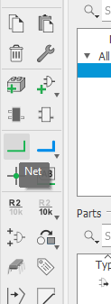 |
Before i start I need to show which part of the side bar does what. The Net tool will be the most used tool as you would use it to conenct the componets together. |
| 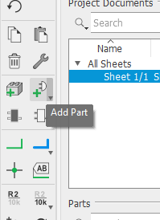 |
To add parts, go to this icon on the side bar. |
| 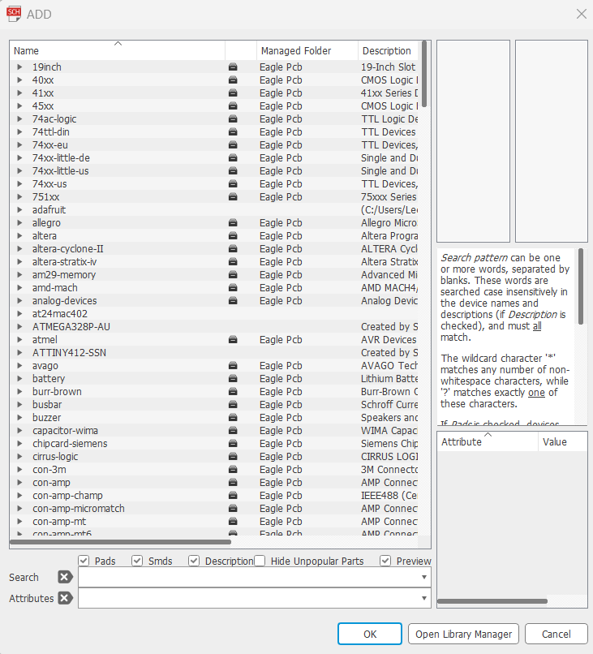 |
This page would show up. Using the '*' key would allow you to search partical names. |
| 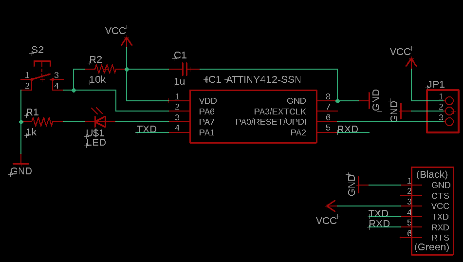 |
This shows the ATTiny412 design I have made with all the compoents in it. As you can see I have placed all compoents onto the board. |
| 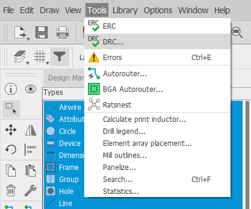 |
Before I begin with the design, I would have to first change the settings the wire size and clearence. I do that by selecting DRC. |
| 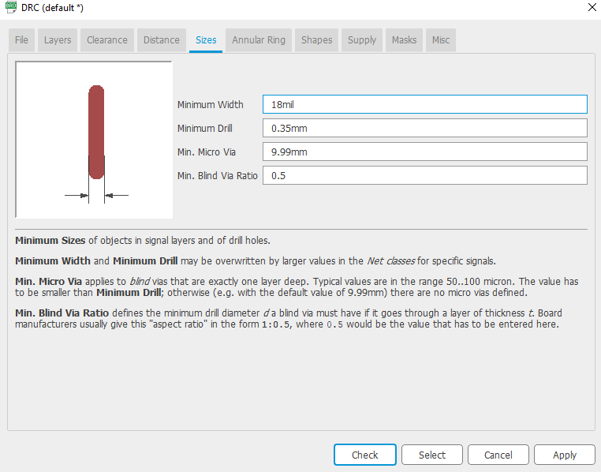 |
This setting changes the trace's size. |
| 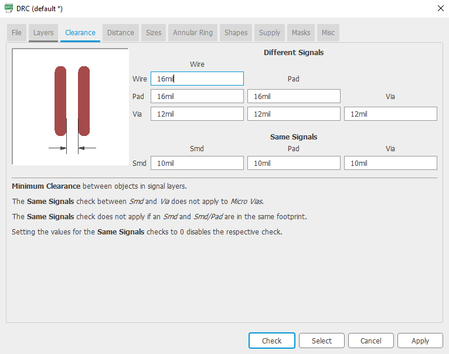 |
This changes the distance between the traces. |
| 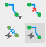 |
Once the settings are set, the highlighted bit is the auto router, this would automatically route all of your componets based on how and where you placed them. |
| 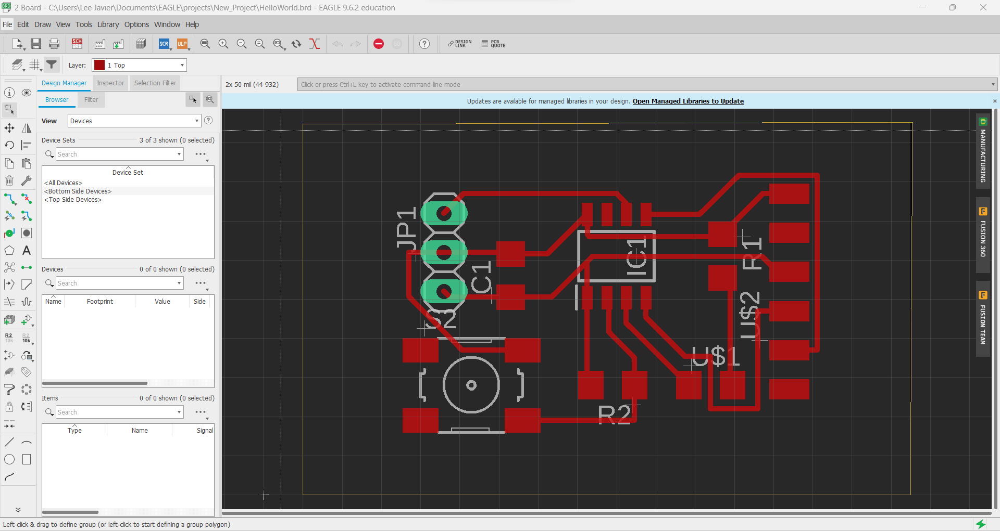 |
This is my result. |
This is my final result.
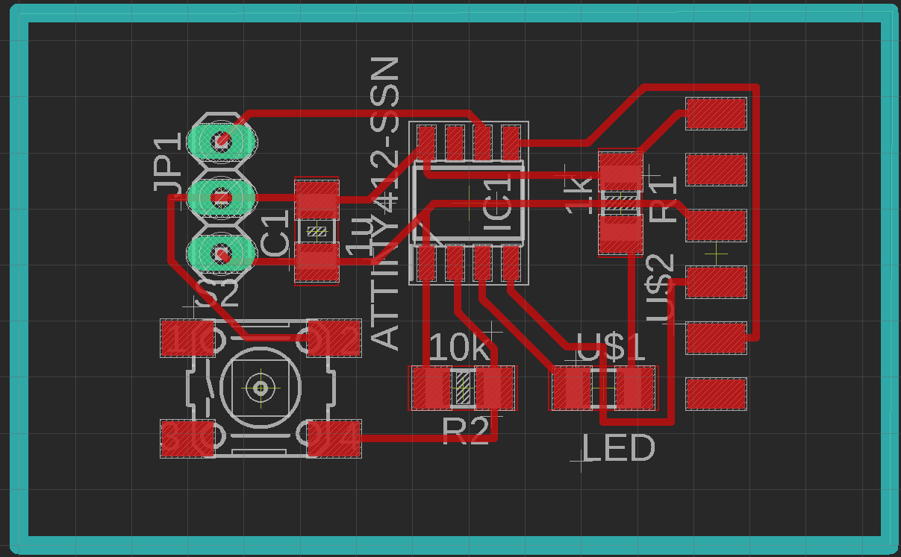| Picture | Explaination |
|---|---|
| 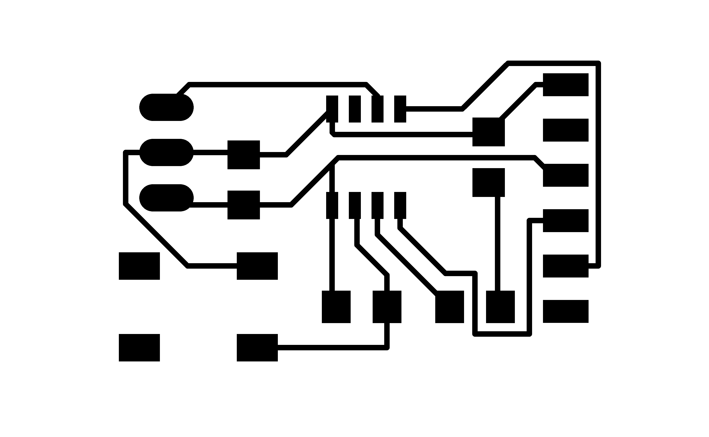 |
For this part, you would have to go to layers and hide all of them and only enable the pads and traces layer. Then export the file as a png with a dpi of 2000px. The picure shown would be the result. |
|
Same for the outline. However you would need to have an image editor to remove the black rectangle insde the box. I use gimp for this part. Once done it should look somthing like this picutre. |
|
| 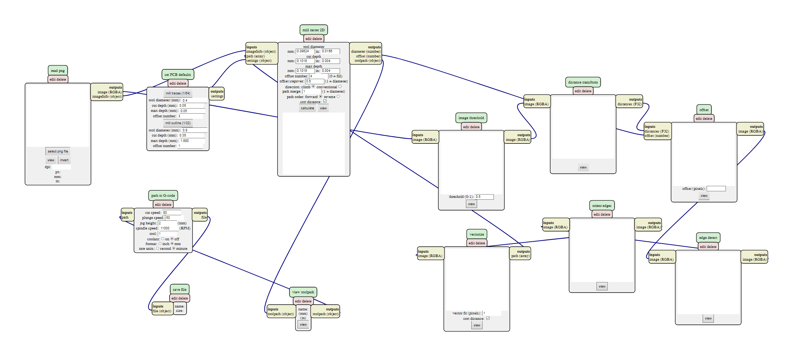 |
Next you will need to go to a website called 'mods'. This will allow you to turn your PNG into G-code so it can be read by the CNC machine. More about this on the eletronic production page. Once you get the G-code you send it to the CNC machine. |
| 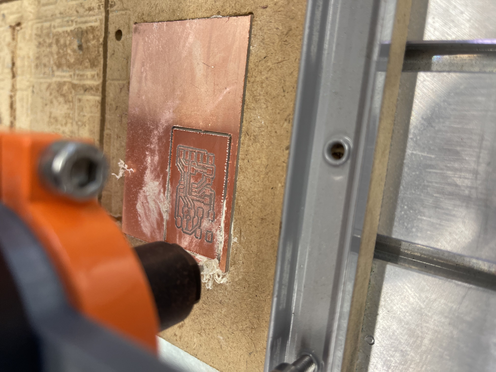 |
The machine is cutting out my board. |
| 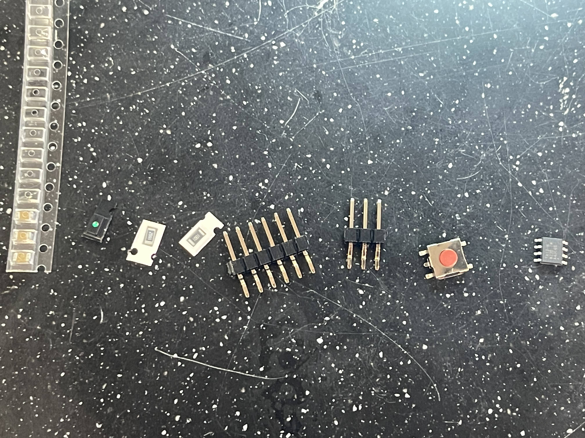 |
Next solder the compoents to the board. |
| 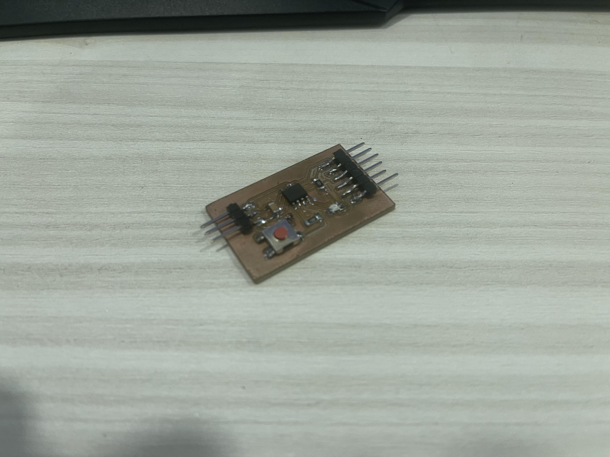 |
This is how the final board should look like. |